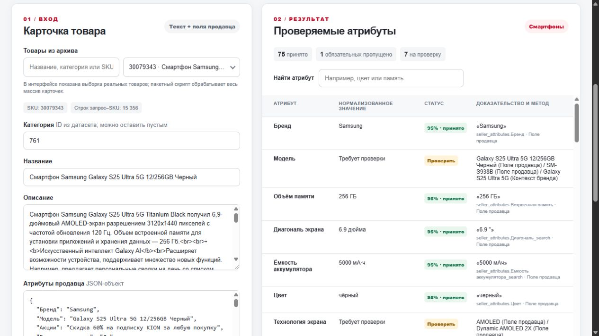

Извлечение характеристик товара из текстовой карточки. Работающий сервис, проверка результата и честные границы качества.
23 октября 2026 · основной показ на VM хакатона
Название, описание и поля продавца приходят в разных форматах. Специалист каталога ищет значение, приводит его к справочнику и исправляет противоречия.
Товар не попадает в нужный фильтр, хотя характеристика есть в тексте.
Фильтр приводит покупателя к неподходящему товару, карточку приходится исправлять.
Мы автоматизируем доказанные значения. Денежная цена ошибок пока не измерена: нужны время ручной проверки, число исправлений и события фильтров.
| Было на продуктовом этапе | Есть к техническому чекпоинту |
|---|---|
| Сценарий и интерфейс на примерах | HTTP API, живая карточка из архива и ввод кейса эксперта |
| Правила извлечения | Нормализация, справочники категорий, конфликт и отказ от неподтверждённого значения |
| Идея гибридного пути | LLM подключена на VM для пропусков и спорных полей, с проверкой цитаты и безопасным возвратом к правилам |
| План оценки | Пакетный экспорт, 50 тестов и воспроизводимый диагностический набор; независимого human gold ещё нет |
Стек: Node.js 20, JavaScript, HTML/CSS, Docker. Для подготовки данных и экспериментов: Python, DuckDB, PyArrow, scikit-learn.
LLM работает через шлюз организаторов на VM. В Vercel доступен тот же путь правил без внешней модели.

На выступлении открыть живой интерфейс, а не показывать этот скриншот вместо работы сервиса.
Значение принимается после проверки источника, формата или справочника и порога 0,8. Конфликт и отсутствие доказательства идут на проверку. Балл правила не является калиброванной вероятностью.
Набор размечен ассистентом до просмотра предсказаний. Это воспроизводимый тест ошибок, а не независимый человеческий эталон и не F1 всего каталога.
LLM недоступнаРезультат правил сохраняется; спорное поле не принимается автоматически.
Плохой входAPI возвращает явную ошибку валидации вместо ложного результата.
Пакетный прогонОшибка одной карточки фиксируется отдельно; готовый экспорт не заменяется неполным файлом.
1 177 200 SKUПодготовлен пакет предсказаний. Модель не вызывается для всего каталога без доказанного прироста качества.